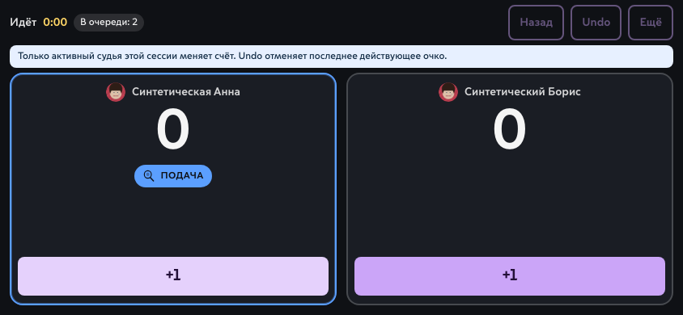
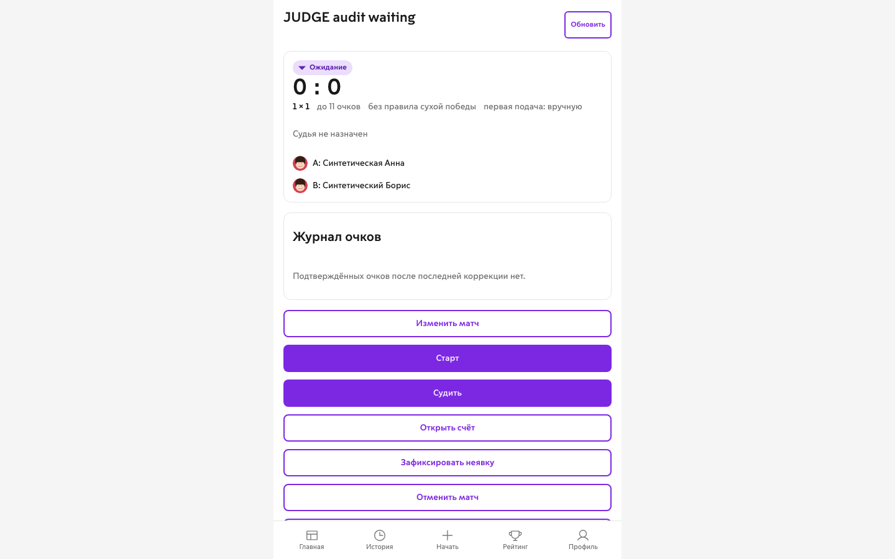
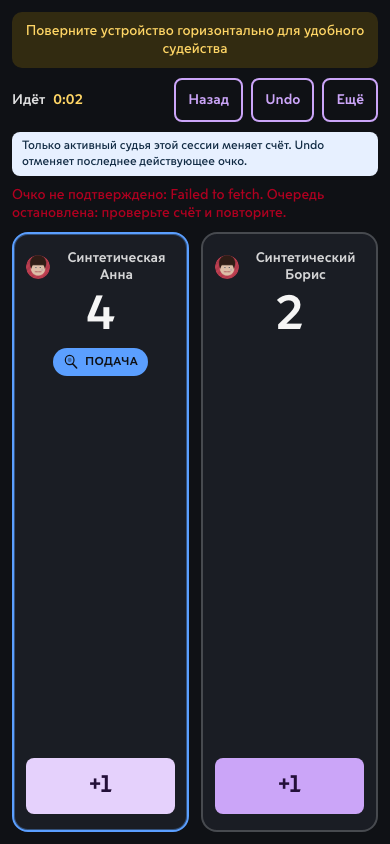

JUDGE — аннотированные схемы до/после
Только структурная цель. Существующие визуальный язык, права, серверный источник истины и очередь очков сохраняются.
До · live landscape

121 — технические Undo/Ещё. 2 — очередь видима, но recovery semantics не представлены.
После · цель для live landscape
Анна
6
ПОДАЁТ: АННА
Борис
4
1 Понятные названия2 Явная полоса queue/recovery3 Именованные +1 не меньше 44 px
До · MatchDetail waiting

121 — empty log занимает место следующего действия. 2 — Start/Judge имеют одинаковый primary weight; исключения идут в том же стеке.
После · цель action hierarchy для desktop
Матч Анны и Бориса
ОЖИДАНИЕ
0 : 0
Анна · Борис
До 11 очков · первая подача вручную
Судья не назначен
Журнал очков
Очков пока нет.
Если матч нельзя продолжить
121 Одно primary action на role/state2 Исключения отделены, права не меняются
До · unknown/offline recovery

121 — общая инструкция повтора при неизвестном исходе. 2 — +1 снова enabled без явной сверки.
После · mobile-цель для неизвестного исхода
Не удалось проверить очко
Счёт на сервере нужно сверить. Мы не будем отправлять очко повторно автоматически.
Анна
4
ПОДАЁТ
Борис
1
1 Сообщение зависит от исхода2 Read-only сверка3 Mutations остановлены, скрытого retry нет
Отдельный кадр · цель judge landscape
Анна
6
ПОДАЁТ: АННА
Борис
4
Отдельный кадр · цель MatchDetail desktop
Матч Анны и Бориса
ОЖИДАНИЕ
0 : 0
Анна · Борис
До 11 очков · первая подача вручную
Судья не назначен
Журнал очков
Очков пока нет.
Если матч нельзя продолжить
12Отдельный кадр · цель mobile recovery
Не удалось проверить очко
Счёт на сервере нужно сверить. Мы не будем отправлять очко повторно автоматически.
Анна
4
ПОДАЁТ
Борис
1